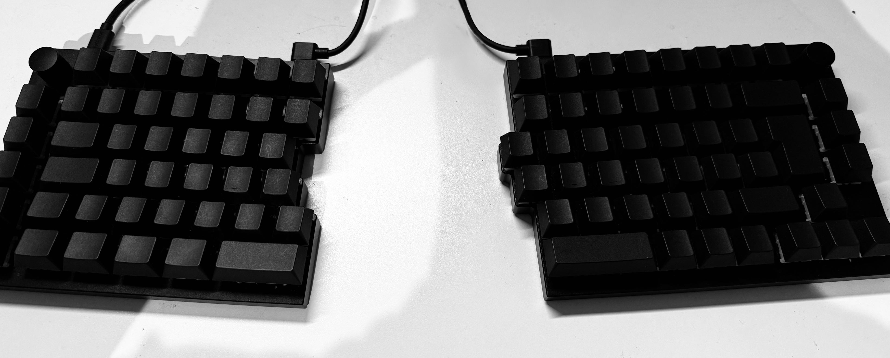

Experience
Software Developer
MSABApr 2026 – Present
- Working on the Unicore team building digital forensics and security software used by law enforcement worldwide.
- Contributing to tools that help investigators extract and analyze data from digital devices.
C++ · C# · .NET · Windows · Linux
IT Associate
Voi TechnologyFeb 2026 – Apr 2026
- Built automation workflows using n8n with JavaScript, TypeScript, and Python to streamline internal processes.
- Led migration of company phone subscriptions from Telia to Tele2, automating the porting process end-to-end.
n8n · JavaScript · TypeScript · Python · REST APIs
IT Support Engineer
MSABJun 2025 – Feb 2026
- Provided technical support for 200+ users, resolving hardware, software, and network issues with high first-contact resolution.
- Managed user lifecycle and workstation deployment via Azure AD, Active Directory, Intune, and Microsoft 365 services.
- Maintained server and network infrastructure, including patching servers, configuring routers/switches, and documenting processes in Confluence.
Windows · Linux · Jira · PowerShell · Azure AD · Active Directory · Intune · Confluence
Junior Backend Developer
HeimdallerJan 2025 – Jun 2025
- Built backend services and REST API integrations enabling customers to track IT support requests online.
- Developed booking systems and dashboards collaborating closely with frontend developers.
- Ensured reliability, performance, and cross-browser compatibility across features.
JavaScript · Node.js · REST APIs · HTML · CSS
Junior Developer
VCG – Vehicle Charge GridJun 2023 – Jan 2024
- Automated data collection from EV charging stations using Python and Pandas, reducing manual data entry by 40%.
- Created scheduled scripts in Python and PowerShell to generate automated reports and move files between systems.
- Developed data visualizations and dashboards to help management track station utilization and revenue trends.
Python · PowerShell · Pandas · Excel · APIs · Databases
Project Archive
Web & Product Work
This is the side where I make things people actually use. Some are more polished than others, but they all came from wanting a tool to exist.
Linker
A link tool I built because I liked the idea of having shortening, analytics, QR codes, and link pages all in one place instead of spread across five services.
View repository →Networked
A social platform idea built around actual work and projects instead of polished profiles and vague personal branding.
View repository →Habit
A habit tracker I made because most of them either do too much or feel annoying to use every day.
View repository →website-
An older version of this site. Simpler, rougher, and useful as a reminder that rebuilding your own website never really ends.
wordpress-plugin
A smaller UI-side experiment. More of a styling and integration repo than a big software project, but still part of the trail.
Lwwdev
Just my GitHub profile repo. Small thing, but I like having even the public-facing bits feel intentional.
C++ & Systems Trail
This is the more low-level side. A lot of it is me learning by building, breaking things, and doing it again until it makes sense.
Enigma Machine CLI
An Enigma machine in the terminal. Mostly built because it sounded fun and I wanted to make the moving parts myself.
View repository →parsercpp
A parser-from-scratch project that taught me a lot by being awkward, fiddly, and worth finishing anyway.
View repository →wordle-cli-cpp
A terminal Wordle clone. Straight-up practice project, but the kind that helps the language start to feel natural.
inventory-managment
An inventory project from the phase where I was making a lot of small C++ programs just to get more reps in.
PasswordGenerator / Passwordm
The same basic problem attacked in two different stacks. Not glamorous, but that kind of repetition is how stuff sticks.
Kanban-board
An older C++ kanban board. A bit clunky now, but I still like it because you can see what I was trying to figure out.
Config, Hardware & Side Trails
This is the tinkering pile. Keyboard stuff, config repos, and small side projects that make daily work feel more mine.
lily58-wireless-zmk-config
My Lily58 config repo. This one is half workflow, half obsession.
View repository →vscode-config
My VS Code setup. Nothing fancy, just the kind of repo that says a lot about how someone actually works every day.
dotfiles
Shell and environment setup stuff. Quiet repo, but it affects everything else.
arduino-stuff
Small hardware-side experiments. A separate lane from the web stuff, which is exactly why I like keeping it around.
activem / pomodoro-timer-c- / quizgamecpp
A grab bag of smaller builds. Some were one-week sprints, some were just curiosity, but they all count.
About Me


Outside work it is mostly time with my girlfriend, our cats, keyboards, and whatever side idea has grabbed me that week.
I like building useful things. Usually that means backend, systems, automation, or tools that save someone from doing the same boring task twice.
I tend to care more about software that actually helps than software that just sounds impressive. If something is messy, repetitive, or harder than it should be, I usually want to fix it.
That is probably why I keep ending up around security software, internal tools, automation, and side projects where I can get close to both the logic underneath and the way it feels to use.
What I am into right now
- Building digital forensics and security software at MSAB.
- Getting better at C++, C#, and the lower-level side of engineering.
- Making small tools and automations whenever work starts feeling repetitive.
- Keeping side projects messy enough to stay fun but solid enough to ship.
How I Work
I usually work fast, then clean up after myself. Ship something, see what feels wrong, fix it, repeat. I care a lot about clarity and making things easier to work with.
What Pulls Me In
Backend work, systems stuff, security-adjacent tooling, CLI projects, and products that sit on top of something a little technical underneath.
Tinkering
Mechanical keyboards, Linux setups, config repos, and odd little tools that start as side quests and then somehow become part of my actual workflow.
Toolbox / Uses
This is the stuff I keep coming back to. Not because it looks good on a list, just because it is what I actually end up using.
C++, C#, Python, and TypeScript
This is the mix I use most. Usually some backend or systems work, some automation, and sometimes a UI pass when I care enough to make it feel better.
VS Code, terminal-first checks, and GitHub
- VS Code with my own config and not much extra clutter.
- I still end up in the terminal for builds, debugging, and random scripts.
- GitHub is where most of my side work lives, even the smaller rough projects.
Linux, Windows, APIs, and platform plumbing
- I move between Windows and Linux depending on what the job needs.
- APIs, identity stuff, and infra-adjacent problems keep showing up in my work.
- Docker usually comes in when I want things to stay predictable.
Python, PowerShell, and n8n
- Small scripts for cleanup, reporting, moving data, and killing repetitive work.
- If a process is annoying enough, I will probably try to automate it.
- I like tools that can be inspected, tweaked, and improved later.
Dotfiles, editor config, and setup polish
- Dotfiles, shell tweaks, and small setup changes that make the machine feel calmer.
- A lot of this is just reducing friction a little at a time.
- I like having a setup I can understand and rebuild myself.
What I've Read
- Thinking in Bets
- The Courage to Be Disliked
- Antifragile
- The Almanack of Naval Ravikant
- Four Thousand Weeks
- Mastery
- Clean Code
- The Pragmatic Programmer
- Designing Data-Intensive Applications
- Code Complete
- Refactoring
- The C++ Programming Language
- Meditations
- Letters from a Stoic
- Beyond Good and Evil
- The Republic
- The Stranger
- Man's Search for Meaning
Travel Map
Keyboards

Mechanical keyboards ended up becoming one of those side interests that keeps blending into the rest of my workflow. Layout, feel, sound, and firmware all start to matter when it is something you use every day.
- Keychron Q11 Split ISO
- Pink Kailh silent switches
- Full black keycaps
- Tape mod under the PCB for that thocky sound
I like keyboards for the same reason I like good software tools: they reward iteration, attention to detail, and a setup that feels personal instead of default.
Split layouts, keymap changes, switch feel, sound tuning, and firmware tweaks all hit the same part of my brain as software customization. It is a mix of ergonomics, aesthetics, and small engineering decisions that add up over time.
That is part of why boards like the Keychron Q11 and Lily58-style setups stand out to me. They feel like the point where hardware, workflow, and tinkering start overlapping in a really fun way.
Boards + Feel
I tend to like split boards, darker caps, and layouts that feel a little more deliberate than stock keyboards. I care about comfort, but I also just like when a board feels intentional.
Firmware + Layers
Custom keymaps are a big part of the fun. Tweaking layers, movement keys, shortcuts, and the little navigation details turns the board into part of the workflow rather than just a device.
Why It Fits
Keyboard tinkering scratches the same itch as software: change a detail, test it, keep what feels better, and slowly build a setup that reflects how you actually work.
Notes
Just scraps, opinions, and things I wanted to remember. Click any note to edit.
Game
-
01
The Witcher 3: Wild Hunt
-
02
Red Dead Redemption 2
-
03
Dark Souls
-
04
Half-Life 2
-
05
Minecraft
-
06
Portal 2
-
07
Hades